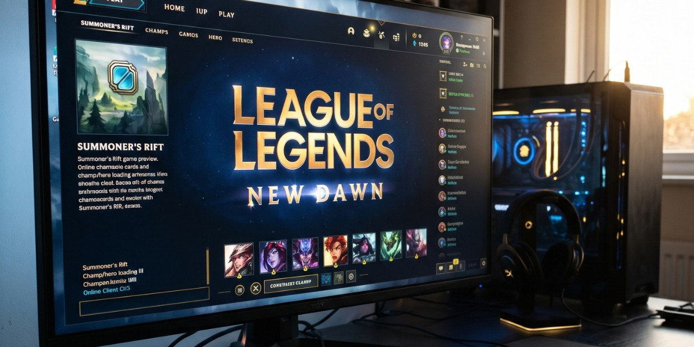

Geekotidien · Édition du 18 novembre 2026
LoL : New Dawn
Riot annonce « New Dawn », une refonte majeure de League of Legends

Riot Games a annoncé « New Dawn » le 16 novembre 2026, lors des Worlds 2026. Le projet, présenté par Pabro et Meddler, touche le client, la Faille de l'invocateur (carte et animations), les runes et la sélection des champions.
Riot reste volontairement vague sur le contenu. L'annonce complète est prévue en janvier 2027.
Le projet fait suite à « League Next », évoqué fin 2025. Selon l'article, il s'agit de la plus grande refonte du jeu depuis 17 ans.
L'article estime que le jeu sortira « probablement pas avant le printemps 2027 ». Il s'agit d'une estimation du journaliste, et non d'une annonce de Riot.
Le + : Riot ne détaille pas encore le contenu : l'annonce complète est attendue en janvier 2027.